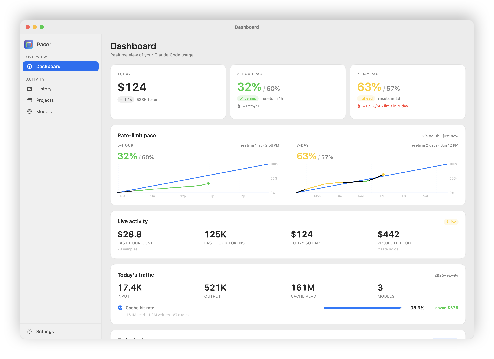
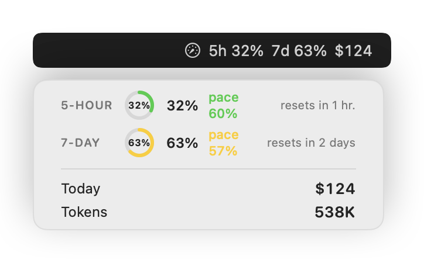
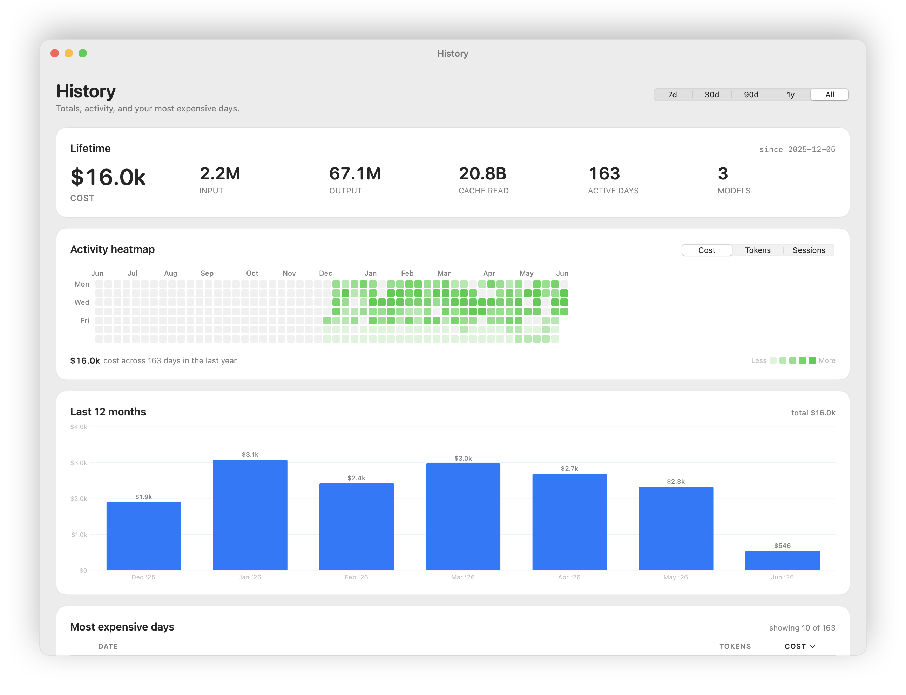

A free, open-source macOS menu-bar app that tracks your Claude Code usage — tokens, cost, how close you are to your 5-hour and weekly limits, and where the spend is going. It sits quietly up top and keeps everything on your Mac.

The dashboard: today's spend, both rate-limit windows paced against an ideal-burn line, and a live end-of-day projection.
The numbers you actually care about — always on, never in the way.
Your 5-hour and weekly windows as pace charts — behind, on track, ahead, or nearly maxed — read live from Anthropic's usage data.
See spend the way Claude Code reports it, or have Pacer price it from tokens. Daily, monthly, and all-time totals.
Break usage down by project and model, drill into any single day, and scan a six-month activity heatmap.
Your current burn rate plus a running "at this pace, today ends at about $X" projection.
A configurable menu-bar readout plus home-screen and Notification Center widgets for cost and pacing.
Optional local alerts at limit thresholds or a daily budget (off by default), and CSV export for your own spreadsheets.
A compact readout lives in your menu bar — icon, percent, or both. Click down for pace gauges, or drop cost and pacing widgets onto your home screen and in Notification Center.


History: lifetime totals, a six-month activity heatmap, and monthly spend.
There are good ways to watch Claude Code usage — the built-in /usage,
the ccusage CLI, and menu-bar
apps like Claude God and
ccseva. Pacer leans into
pacing — your windows against an ideal-burn line, "will I run out
before the reset?" — stays native and quiet-by-default, and signs & notarizes
its own auto-updates. The full, honest side-by-side lives in the README.
Pacer is local-first. It reads only the files Claude Code already writes to your own machine, and sends nothing about your usage anywhere — no account, no telemetry, no cloud.
Download the latest .dmg, drag Pacer to Applications, and it lives in your menu bar from then on — updating itself automatically.